Introdução à unidade
Iniciamos esta unidade com o estudo de equações do 1.º grau com duas incógnitas. Na sequência, apresentamos a resolução de sistemas de equações por meio de dois métodos: substituição e adição. Há outros métodos para se resolver um sistema, porém não serão estudados neste momento.
A seguir, relacionamos os objetivos que se pretende atingir ao estudar os conceitos desta unidade.
Capítulo 1 – Equações com duas incógnitas
Objetivos:
- Reconhecer uma equação do 1.º grau com duas incógnitas.
- Identificar que uma equação do 1.º grau com duas incógnitas apresenta infinitas soluções.
Capítulo 2 – Sistemas de equações
Objetivos:
- Reconhecer um sistema de equações do 1.º grau com duas incógnitas.
- Resolver um sistema de equações do 1.º grau com duas incógnitas pelo método da substituição e pelo método da adição.
- Resolver situações-problema que envolvam sistemas de equações.
Probabilidade e estatística –
Princípio multiplicativo ou princípio fundamental da contagem
Objetivo:
- Calcular as possibilidades por meio de árvore de possibilidades e do princípio multiplicativo.
Orientações específicas
Na abertura da unidade, apresentamos uma situação que pode ser resolvida de forma direta, ou realizada por meio de um sistema de equações. Neste momento, queremos mostrar aos alunos as possibilidades que temos para resolver uma situação-problema. Discuta com os alunos sobre as equações que poderiam ser formadas com os dados do problema e mostre que há outras formas de resolver um mesmo problema.
Uma das equações que podem ser montadas é x + y = 10, sendo x a área plantada de trigo e y a de batata, lembrando que x e y podem representar também a quantidade de batata e trigo, respectivamente. As equações irão depender de qual letra será atribuída para cada produto agrícola. Outra equação pode ser 0,7x + 0,3y = 1, no caso de x representar a área plantada de trigo e y a de batata. Comente com os alunos que nesta unidade será estudado como resolver situações-problema utilizando-se equações com duas incógnitas e formando-se um sistema de equações. Após o estudo dos conceitos da unidade, você poderá retomar esta situação-problema e resolvê-la com os alunos utilizando-se um sistema de equações.


|
Principais habilidades da BNCC |
EF08MA07, EF08MA0 |
|
Competências |
CE8, CG9 |
É importante que os alunos percebam que uma equação do 1.º grau com duas incógnitas possui infinitas soluções. Caso julgue necessário, proponha outras equações para que os alunos mostrem algumas soluções.
Neste capítulo retomamos o estudo de equações do 1.° grau ampliando com o estudo das equações do 1.° grau com duas incógnitas e, depois, com o estudo de sistemas formados por duas equações desse tipo.
Atividade 1
1 cubo azul e 7 cubos verdes; 2 cubos azuis e 6 verdes; 3 cubos azuis e 5 verdes; 4 cubos azuis e 4 verdes; 5 cubos azuis e 3 verdes; 6 cubos azuis e 2 verdes; 7 cubos azuis e 1 verde. Há 7 possibilidades de solução.

|
Principais habilidades da BNCC |
EF08MA08, EF08MA09 |
|
Competências |
CE6, CE8, CG9 |
Neste capítulo, apresentaremos duas formas diferentes para resolver um sistema de equações do 1.º grau com duas incógnitas. Após o estudo dessas formas de resolução, os alunos poderão escolher a que mais se identificam para resolver as situações-problema.
Atividade 1
Para resolver este problema, os alunos poderão fazer desenhos, esquemas ou ainda montar um sistema de equações. O objetivo é proporcionar um momento de discussão para que eles apresentem a forma como pensaram. Na sala, há 12 meninos e 24 meninas.


Encontre soluções
Atividade 1
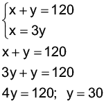
x = 3y, x = 3 ∙ 30, x = 90
Nessa caixa, há 30 bolas vermelhas e 90 bolas brancas.
Atividade 2

x = 18 - y, x = 18 - 10, x = 8
Nesse quintal, há 10 coelhos e 8 galinhas.
Atividade 3
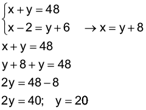
x = y + 8, x = 20 + 8, x = 28
Júlia tem 28 anos e Débora, 20 anos.
Atividade 4
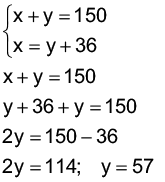
x = y + 36, x = 57 + 36, x = 93
Os pedaços de madeira terão 57 cm e 93 cm.
Atividade 5

- 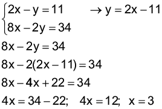
y = 2x - 11
y = 2 ∙ 3 - 11
y = 6 - 11
y = -5
S = {(3, -5)}


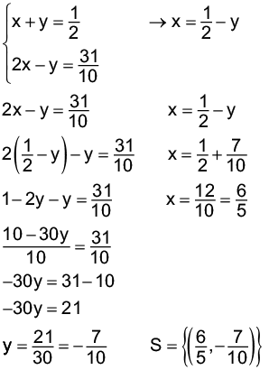
Atividade 6
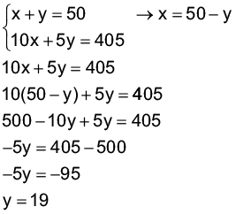
x = 50 - y, x = 50 - 19, x = 31
Tenho 31 cédulas de 10 reais e 19 cédulas de 5 reais.
Atividade 7

x = 40 - y
x = 40 - 17
x = 23
Os números são 17 e 23.


Durante o estudo de sistemas de duas equações do 1.° grau com duas incógnitas, apresentamos diferentes métodos de obtenção da solução de um sistema de equações. Em seguida, apresentamos a representação gráfica de um sistema de equações. Nesse momento, se julgar oportuno, relembre as posições relativas entre retas:
- Duas retas paralelas: não possuem ponto em comum.
- Duas retas concorrentes: possuem apenas um ponto de encontro.
- Retas coincidentes: retas que possuem dois e, portanto, todos os pontos em comum.


Na representação gráfica, enfatize aos alunos que a reta vermelha representa infinitas soluções da equação x + y = 40; a reta azul, representa infinitas soluções da equação 4x + 2y = 136 e o ponto de coordenadas (28, 12) representa a única solução do sistema.
Solicite aos alunos que façam a solução gráfica das situações apresentadas anteriormente, nesse método.
Encontre soluções
Atividade 1
Número de laranjeiras: x
Número de limoeiros: y

Adicionando as duas equações, temos que x = 42 e y = 24.
Nesse pomar, há 42 laranjeiras e 24 limoeiros.
Atividade 2
1.º número: x
2.º número: y

Adicionando as duas equações, temos que y = 11 e x = 8.
Os números são 8 e 11.
Atividade 3
Número de brasileiros: x
Número de chilenos: y

Adicionando as duas equações, temos que x = 110 e y = 22.
Participam desse seminário 22 chilenos e 110 brasileiros.
Atividade 4
- Adicionando as duas equações, temos: x = 13; y = 10.
S = {(13, 10)}
- 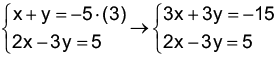
Adicionando as duas equações, temos: x = -2; y = -3. S = {(-2, -3)}
- 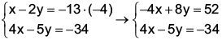
Adicionando as duas equações, temos que y = 6 e x = - 1. S = {(-1, 6)}
- 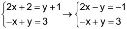
Adicionando as duas equações, temos que x= 2 e y = 5. S = {(2, 5)}

Adicionando as duas equações temos:
x = -3; y = - 4. S = {(-3, - 4)}
Atividade 5
Fitas amarelas: x
Fitas vermelhas: y

Adicionando as duas equações, temos que x = 120 e y = 60.
Foram produzidas 120 peças de fitas amarelas e 60 peças de fitas vermelhas.
Atividade 6
Número de mulheres: x
Número de homens: y

Adicionando as duas equações, temos que x = 96 e y = 144. Irão a esse show 144 homens e 96 mulheres.


|
Principais habilidades da BNCC |
EF08MA03, EF08MA09, EF08MA19 |
|
Competências |
CE8, CG6, CG9 |
Neste capítulo, estudaremos como resolver equações do 2.º grau. No caso das equações do 2.º grau que são incompletas pode-se utilizar caminhos específicos para sua resolução. Porém, é importante que os alunos percebam que a fórmula geral serve para resolver todos os tipos de equações do 2.º grau.
Na situação apresentada, a medida da largura e do comprimento será igual a 60 cm. A equação do 2.º grau encontrada é uma equação incompleta, em que os alunos poderão resolvê-la isolando o valor da incógnita. Discuta com os alunos quantas soluções acham que esta equação apresenta. Aproveite o momento para mostrar que a equação apresenta duas raízes possíveis, 60 e - 60, mas que como estamos nos referindo a um problema em que procuramos as medidas da largura e do comprimento, - 60 não serve como resposta.
Comente que agora iremos estudar equações do 2.º grau e que serão apresentadas as equações completas e incompletas. Verifique se são capazes de apresentar a diferença entre uma equação completa e incompleta. Neste momento, estamos promovendo uma discussão para verificar os conhecimentos prévios que os alunos possuem. Caso eles não apresentem as respostas esperadas, não se preocupe. Retome esta situação-problema após o estudo dos conceitos que serão apresentados na sequência.
Encontre soluções
Atividade 1

A = 160 cm2
A = x(x + 6)
x(x + 6) = 160
x2 + 6x - 160 = 0
Atividade 3
- x + 2 = (x - 4)(x - 5) x + 2 = x2 - 5x - 4x + 20
-x2 + 9x - 20 + x + 2 = 0
-x2 + 10x - 18 = 0, completa.
- 8(x2 - 1) = 4(x2 + 1) 8x2 - 8 = 4x2 + 4
8x2 - 4x2 - 8 - 4 = 0
4x2 - 12 = 0, incompleta
- 15(x - 1) = 4x2 - 15 15x - 15 - 4x2 + 15 = 0
- 4x2 + 15x = 0, incompleta.
- (x - 3)2 + (x + 3)2 = 10 x2 - 6x + 9 + x2 + 6x + 9 - 10 = 0
2x2 + 8 = 0, incompleta.
- (3x + 6)(3x - 6) = (x + 2)2 9x2 - 36 = x2 + 4x + 4
9x2 - x2 - 4x - 4 - 36 = 0
8x2 - 4x - 40 = 0, completa.
Atividade 4
- 7x - 3x2 + 10 = x2 - 8x
7x - 3x2 + 10 - x2 + 8x = 0
- 4x2 + 15x + 10 = 0
- (x + 3)(x - 3) = 7
x2 - 9 = 7
x2 - 9 - 7 = 0
x2 - 16 = 0
- x(3x - 5) + 4x2 = -11x + 9
3x2 - 5x + 4x2 + 11x - 9 = 0
7x2 + 6x - 9 = 0
- (y + 5)2 + (y - 5)2 = 10y + 2
y2 + 10y + 25 + y2 - 10y + 25 =
= 10y + 2
2y2 + 50 - 10y - 2 = 0
2y2 - 10y + 48 = 0
- 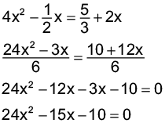
- 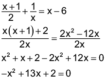


Encontre soluções
Atividade 1
- x2 - 25 = 0
x2 = 25
x = ± 5 S = {- 5, 5}
- 5x2 - 36 = x2
5x2 - x2 = 36
4x2 = 36
x2 = 9
x = ± 3 S = {- 3, 3}
- x2 - 85 = - 4
x2 = 85 - 4
x2 = 81
x = ± 9 S = {- 9, 9}

- x2 - 600 = 300
x2 = 300 + 600
x2 = 900
x = ± 30 S = {- 30, 30}
- - 108 + 3x2 = 0
3x2 = 108
x2 = 36
x = ± 6 S = {- 6, 6}
- 12(x2 - 1) = 4(x2 + 1)
12x2 - 12 = 4x2 + 4
8x2 = 16
x2 = 2
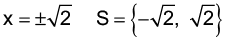
- 2x + 16 = x(x + 2)
2x + 16 = x2 + 2x
x2 = 16
x = ± 4 S = {- 4, 4}
Atividade 2

2 400 - 4x2 = 1 200
4x2 = 1 200
x2 = 300

O lado do quadrado mede 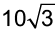
Atividade 3
- x - x2 = 0
x(x - 1) = 0
x = 0
x - 1 = 0
x = 1 S = {0, 1}
- 11x2 = 7x
11x2 - 7x = 0
x(11x - 7) = 0
x = 0
11x - 7 = 0
11x = 7
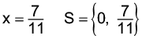
- x(x - 1) = 0
x = 0
x - 1 = 0
x = 1 S = {0, 1}
- - 8x + 16x2 = 0
8x(-1 + 2x) = 0
x = 0
-1 + 2x = 0
2x = 1
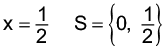
- x2 - 5x = 6x
x2 - 5x - 6x = 0
x2 - 11x = 0
x(x - 11) = 0
x = 0
x - 11 = 0
x = 11 S = {0, 11}
- 7x2 + 6 = 6 + 4x
7x2 + 6 - 6 - 4x = 0
7x2 - 4x = 0
x(7x - 4) = 0
x = 0
7x - 4 = 0
7x = 4

- 3x2 - 5 = 5(x - 1)
3x2 - 5 = 5x - 5
3x2 - 5 - 5x + 5 = 0
3x2 - 5x = 0
x(3x - 5) = 0
x = 0
3x - 5 = 0
3x = 5

- (x - 2)(x - 3) = 6
x2 - 3x - 2x + 6 - 6 = 0
x2 - 5x = 0
x(x - 5) = 0
x = 0
x - 5 = 0
x = 5 S = {0, 5}


Atividade 7
Inicialmente, escrevemos os números de 0 a 9 no sentido anti-horário a partir de qualquer círculo. A seguir, subtraímos 1 dos números ímpares e somamos 1 aos números pares. Observando a figura tem-se que a maior soma que se pode obter é 8 + 9 + 6 = 23.

Atividade 8
- 1.ª figura formada por 1 triângulo;
- 2.ª figura formada pelo triângulo da figura 1 mais 2 triângulos: 1 + 2 = 3 triângulos;
- 3.ª figura formada pelos 3 triângulos da figura 2 mais 3 triângulos: 3 + 3 = 6 triângulos;
- 4.ª figura formada pelos 6 triângulos da figura 3 mais 4 triângulos: 6 + 4 = 10 triângulos;
- 5.ª figura formada pelos 10 triângulos da figura 4 mais 5 triângulos: 10 + 5 = 15 triângulos.
Como cada triângulo é formado por 3 palitos, então a 5.ª figura terá 15 ∙ 3 = 45 palitos.
Probabilidade e estatística — Princípio multiplicativo ou princípio fundamental da contagem
Neste momento, retomamos o estudo do princípio fundamental da contagem, assunto já abordado nos anos anteriores. Este princípio é apresentado como um recurso para a construção de estratégias e procedimentos, estimulando o raciocínio lógico, e na resolução de situações-problema. Inicialmente, apresentamos a árvore de possibilidades para que sirva como recurso didático de fácil compreensão do princípio fundamental da contagem. Para que seu entendimento ocorra, construa com os alunos a árvore proposta e procure construir outras mais elaboradas com mais itens, como proposta de atividade.
Caso julgue oportuno, apresente o seguinte texto aos alunos:
O Sistema Mandala é uma forma de produção de alimentos, onde o plantio é feito de forma circular. Neste sistema de produção, a horta é plantada em círculos concêntricos que representam a natureza, onde tudo é arredondado. Os plantios em círculos, diferentes dos desenvolvidos pela agricultura convencional, permitem às plantas se ajudarem mutuamente, trabalhando com conceitos de cortinas quebra ventos, de plantas repelentes a insetos, de plantas melíferas e uma série de segredos que a natureza nos ensina e que também colaboram com a recuperação da biodiversidade e do controle ecológico de insetos pragas assim como de doenças e plantas invasoras.
É um sistema simples que consiste da produção em vários canteiros em torno de uma única fonte de água para irrigação, distribuída uniformemente para plantações diferentes, permitindo um melhor aproveitamento de recursos como a água e o solo. É possível realizar este método de produção em áreas pequenas, e com poucos recursos, proporcionando assim a subsistência e até renda de quem o adota, sendo direcionado para pequenos proprietários ou associações rurais.
De acordo com Ehlers (1994), o Projeto Mandala baseia-se em princípios ecológicos, como a reciclagem de nutrientes, o reuso da água e a variedade de culturas produzidas. Assim, o sistema mandala de produção de alimentos está intimamente relacionado com o desenvolvimento rural da região, sendo considerado um estimulante para a agricultura familiar.
MARTINS, Renata Knychala. O sistema mandala de produção de alimentos: uma estratégia para o desenvolvimento da agricultura familiar. Disponível em: http://www.lagea.ig.ufu.br/xx1enga/anais_enga_2012/eixos/1397_1.pdf. Acesso em: 10 jun. 2022.


Probabilidade e estatística – Princípio fundamental da contagem
Atividade 6
Algarismos: 10 ∙ 10 ∙ 10 ∙ 10 =
= 10 000
Excluindo a placa com
0000: 10 000 - 1 = 9 999
Letras:
26 ∙ 26 ∙ 26 = 17 576
Total de placas: 17 576 ∙ 9 999 =
= 175 742 424
Atividade 7

O número de variações é igual a 7.
Atividade 8
A ________ B ________ C
3 rodovias 2 rodovias
2 ferrovias 2 ferrovias
Possibilidades:
3 ∙ 2 + 2 ∙ 2 = 6 + 4 = 10 possibilidades.
Relembre
Atividade 1
- 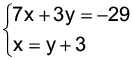
7x + 3y = -29 x = y + 3
7(y + 3) + 3y = -29 x = -5 + 3
7y + 21 + 3y = -29 x = -2
10y = -29 - 21
10y = -50; y = -5 S = {(-2, -5)}

5x + y = 28 x = 8 + y
5(8 + y) + y = 28 x = 8 - 2
40 + 5y + y = 28 x = 6
6y = 28 - 40
6y = -12; y = -2 S = {(6, -2)}

Adicionando as duas equações, temos: x = -7; y = 3. S = {(-7, 3)}

2x - y = 1 y = 5 - 4x
2x - 5 + 4x = 1 y = 5 - 4
6x = 6 y = 1
x = 1 S = {(1, 1)}

Adicionando as duas equações, temos: x = 2; y = 1. S = {(2, 1)}

Adicionando as duas equações, temos: x = 2; y = 2. S = {(2, 2)}

Adicionando as duas equações, temos: y = -5. S = {(-3, -5)}
- 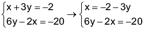
6y - 2x = -20 x = -2 - 3y
6y - 2(-2 - 3y) = -20 x = -2 + 6
6y + 4 + 6y = -20 x = 4
12y = -24
y = -2
S = {(4, -2)}

Adicionando as duas equações, temos: x = 6; y = 18. S = {(6, 18)}

Adicionando as duas equações, temos:
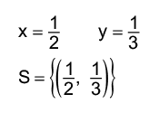
Atividade 2

Adicionando as duas equações, temos: x = 3; y = 5.
S = x + y = 3 + 5 = 8
Atividade 3
Questão correta: x
Questão errada ou em branco: y

Adicionando as duas equações, temos: x = 45; y = 15
Ele acertou 45 questões.
Atividade 4
Pontos da equipe vencedora: x
Pontos da equipe perdedora: y

21x = 23y x = 8 + y
21(8 + y) = 23y x = 8 + 84
168 + 21y = 23y x = 92
2y = 168
y = 84
A equipe vencedora marcou 92 pontos.
Atividade 5
Preço de um lápis: x
Preço de uma caneta: y

Adicionando as duas equações, temos: x = 3,5; y = 4,8.
Cada lápis custa R$ 3,50 e cada caneta, R$ 4,80.
Atividade 6
Minha idade: x
Idade do meu irmão: y

2x + 3y = 190 y = x + 10
2x + 3(x + 10) = 190 y = 32 + 10
2x + 3x + 30 = 190 y = 42
5x = 190 - 30
5x = 160
x = 32
A idade de meu irmão é 42 anos.